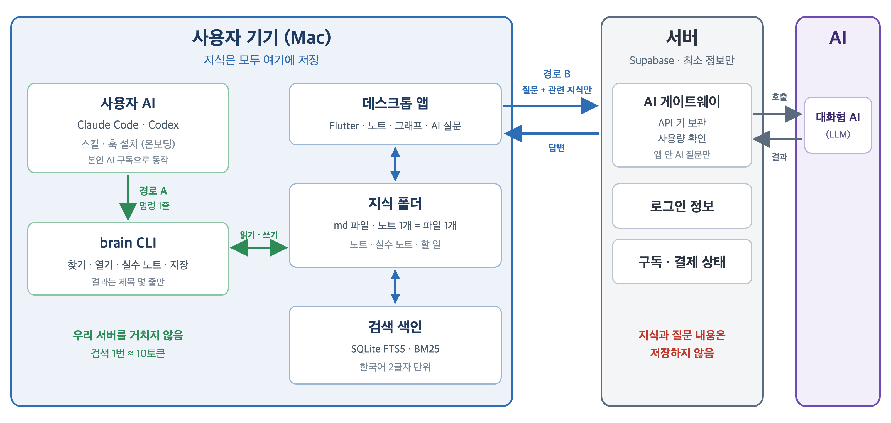

| 문서 구분 | 기말 프로젝트 기획안 |
|---|---|
| 버전 | v1.1 (교수님 피드백 반영) |
| 작성일 | 2026년 11월 5일 |
| 작성자 | 김민상 (대림대학교 3학년 2반) |
| 수신 | 양윤모 교수님 |
| 프로젝트 형태 | 1인 프로젝트 |
| 문제 | 현재 상황 |
|---|---|
| 지식이 흩어진다 | AI 대화, 메모, 회의 내용이 도구마다 흩어져 있어 다시 찾기 어렵다 |
| AI가 같은 실수를 반복한다 | 새 대화를 시작하면 이전에 바로잡아 준 내용을 기억하지 못한다 |
| 해결 방법이 어렵다 | Claude Code·Codex의 메모리 파일, 훅, MCP를 설정하면 해결할 수 있지만 개발 지식과 시간이 필요하다 |
번거로운 설정을 플랫폼이 대신한다. 사용자가 연동 버튼을 누르면 플랫폼이 AI 도구에 온보딩 파일(스킬·훅)을 설치한다. 그러면 AI는 따로 설명하지 않아도 내 지식을 찾아 쓰고, 대화는 자동으로 지식이 된다.
| No. | 기능 | 설명 | 무료 | Pro |
|---|---|---|---|---|
| 1 | 지식 수집 | 노트 작성, AI 대화기록·세션 기록 가져오기 | ○ (개수 제한) | ○ |
| 2 | 뇌 그래프 | 저장된 지식을 신경망처럼 연결해 보여 준다 | ○ | ○ |
| 3 | 위키 기반 AI 답변 | 앱 안에서 질문하면 관련 지식만 찾아 AI에 함께 보낸다 | 월 사용량 제한 | 넉넉한 사용량 |
| 4 | AI 실수 노트 | 교정 반응을 검증 에이전트가 판단해 규칙으로 저장하고, 관련 질문에 자동 반영한다 | 직접 교정 | 자동 감지 포함 |
| 5 | 문서 정리·할 일 | 대화에서 할 일을 뽑아 목록으로 관리한다 | 직접 등록 | 자동 추출 |
| 6 | 자동 최적화 | 중복 합치기, 자동 연결, 목차 파일 갱신 | [정리하기] 버튼 | 매일 자동 |
| 7 | AI 도구 연동 | Claude Code·Codex에 연동 스킬을 설치해, AI가 내 지식을 바로 찾고 대화를 저장한다 | - | ○ |
| 8 | 회의 기록* | 음성을 텍스트로 바꾸고 요약해 지식으로 저장 | 텍스트 붙여넣기 | 녹음 변환 |
| 9 | 기기 간 동기화* | 암호화된 상태로 여러 기기에서 이어 쓰기 | - | ○ |
* 표시는 2단계(기말 이후) 기능이다.
점수를 미리 정해 두고 반응에 따라 더하고 빼는 방식은 쓰지 않는다. 사용자는 대충 "좋아"라고 답하는 경우가 많아 점수가 올라가기만 하기 때문이다. 규칙 문장 형식("언제 → 무엇을 → 왜")만 오픈소스 agent-librarian의 rule-creator를 참고했다.
핵심 원칙은 "지식은 사용자 기기에, 서버에는 꼭 필요한 정보만"이다. 연동한 AI는 우리 서버를 거치지 않고 기기의 지식을 바로 찾는다.

| 데이터 | 저장 위치 | 이유 |
|---|---|---|
| 노트·그래프·실수 노트·할 일 | 사용자 기기 (md 파일) | 개인 지식을 외부에 두지 않고, 사용자 AI와 다른 노트 앱에서도 바로 읽을 수 있다 |
| 검색 색인 | 사용자 기기 (SQLite) | md 파일에서 언제든 다시 만들 수 있다 |
| 로그인 정보 | 서버 | 계정 보호 |
| 구독·결제 상태 | 서버 | 월 결제 갱신 관리 |
| AI 서비스 키(API 키) | 서버 | 사용자 화면에 키가 노출되지 않게 한다 |
| 앱 안 AI 질문 내용 | 저장하지 않음 (서버는 전달만) | AI 호출에 키가 필요해 서버를 거치지만, 내용은 남기지 않는다 |
| 연동한 AI가 찾은 지식 | 서버를 거치지 않음 | 사용자 AI가 기기에서 직접 찾고, 사용자 본인의 AI 서비스로만 전달된다 |
| 구분 | 기술 | 하는 일 |
|---|---|---|
| 화면 | Flutter (macOS 앱, 웹 체험판) | 로그인, 노트, 뇌 그래프, AI 질문, 할 일, 연동 화면 |
| 지식 저장 | md 파일 (앱 전용 폴더) | 노트·실수 노트·할 일 보관. 사용자 AI와 Obsidian에서도 읽힌다 |
| 검색 색인 | SQLite FTS5 (BM25) | 원문 검색. 한국어는 조사 때문에 2글자 단위로 색인 |
| 연동 | brain CLI, 연동 스킬·훅 | Claude Code·Codex가 명령 한 줄로 내 지식을 찾고 저장 |
| 회원·결제 | Supabase (Auth, Database) | 로그인, 구독 상태 관리 (지식은 저장하지 않음) |
| AI 게이트웨이 | Supabase Edge Functions | 앱 안 AI 질문일 때만 AI 키를 숨긴 채 호출하고, 회원 등급과 사용량을 확인 |
| AI | 대화형 AI (LLM) | 답변, 요약, 교정 검증 |
| 결제 | 모의 결제 화면 | 기말에서는 화면만 구현, 실서비스 시 결제 대행사 연동 |
| 단계 | 경로 A: 연동한 AI | 경로 B: 앱 안 AI 질문 |
|---|---|---|
| 질문 | 평소처럼 Claude Code·Codex에 질문한다 | 앱 화면에서 질문한다 |
| 찾기 | AI가 "brain find 검색어"를 실행해 관련 노트 제목 5줄을 받는다 | 앱이 기기 색인에서 관련 노트 5개와 실수 노트 최대 3개를 찾는다 |
| 읽기 | 필요한 노트만 "brain show"로 연다 | 찾은 지식만 질문과 함께 AI 게이트웨이로 보낸다 |
| 답변 | 사용자 본인의 AI가 답한다 | 서버가 등급·사용량을 확인하고 AI에 전달해, 결과만 돌려준다 |
| 서버 | 거치지 않음 | 내용은 저장하지 않음 |
| 비용 | 우리 비용 없음 (검색 명령 10토큰 안팎) | 사용량 1회 차감 |
예: AI가 "brain find 결제 오류"를 실행하면 "n_0042 결제 웹훅 재시도 규칙"처럼 제목 몇 줄만 받고, 필요할 때 "brain show n_0042"로 본문을 연다.
원칙: 비용이 드는 기능(앱 안 AI 호출, 음성 변환, 동기화)은 유료로 제공한다. 지식은 사용자 기기에 저장되고 연동한 AI의 검색은 우리 서버를 거치지 않아 비용이 들지 않으므로, 저장은 무료로 넉넉하게 제공한다.
| 항목 | 무료 | Pro (월 9,900원, 가안) |
|---|---|---|
| 노트 저장 | 최대 200개 | 무제한 |
| 앱 안 AI 질문 | 월 50회 | 월 1,000회 |
| AI 실수 노트 | 직접 교정, 최대 20개 | 자동 감지 포함, 무제한 |
| 자동 정리 | [정리하기] 버튼 | 매일 자동 |
| AI 도구 연동 | - | Claude Code·Codex |
| 회의 기록 | 텍스트 붙여넣기 | 녹음 변환 |
| 기기 간 동기화 | - | 암호화 동기화 |
금액과 수치는 가안이며, 개발 후 실제 AI 비용을 측정해 조정한다. AI 질문 횟수는 앱 안 질문에만 적용하고, 연동한 AI의 검색은 횟수에 포함하지 않는다.
참고 사례: Obsidian은 앱을 개인 사용자에게 무료로 제공해 기기에 저장하게 하고, 기기 간 동기화를 유료로 판매한다. 본 서비스도 같은 구조를 따른다.
| 구분 | 예시 | 특징 | 본 서비스와의 차이 |
|---|---|---|---|
| 노트 도구 | Notion, Obsidian | 사람이 직접 쓰고 정리한다 | AI가 지식을 자동으로 모으고 정리한다 |
| AI 도구 자체 기능 | Claude Code 메모리, Codex AGENTS.md | 도구마다 따로 저장되고, 사용자가 직접 관리한다 | Claude·Codex가 같은 지식을 함께 쓰고, 검증된 규칙만 남긴다 |
| AI 메모리 오픈소스 | claude-mem, mem0 | 개발자가 직접 설치·설정해 쓴다 | 설정 없이 가입·연동만으로 쓴다 |
| 회의 기록 서비스 | 클로바노트 | 회의 녹음과 요약에 집중한다 | 회의 내용을 기존 지식·할 일과 연결한다 |
차별점 4가지
| 구분 | 기능 |
|---|---|
| 포함 | 회원가입·로그인, macOS 데스크톱 앱, 노트 md 저장과 검색 색인, AI 대화기록 파일 가져오기, 뇌 그래프, brain CLI와 Claude Code·Codex 연동 스킬, 앱 안 AI 질문, 실수 노트와 검증 에이전트, 할 일, 요금제·모의 결제 화면, 웹 체험판 |
| 제외 (2단계) | 임베딩 검색, MCP 연결, Windows 앱(Windows PC 필요), 회의 녹음 변환, 매일 자동 정리, 암호화 동기화, 실제 결제 |
범위를 정한 이유: 핵심 가치인 "지식 저장 → 연동한 AI가 찾아 쓰기 → 실수 없는 답변" 흐름을 기말 안에 완성해 시연하기 위함이다. 임베딩 검색을 원문 검색으로 바꿔 줄어든 작업량만큼 연동 기능을 기말 범위로 당겼다.
| 단계 | 기간 | 작업 | 산출물 |
|---|---|---|---|
| 1주차 | 11/06 ~ 11/12 | 기획 확정, 설계서·화면 설계, 개발 환경(Xcode·Flutter 데스크톱) 구성, 연동 스킬 초안 | 설계서, 화면 설계, 스킬 초안 |
| 2주차 | 11/13 ~ 11/19 | 회원가입·로그인, 노트 md 저장, 검색 색인, AI 대화기록 가져오기 | 로그인·노트·검색 기능 |
| 3주차 | 11/20 ~ 11/26 | brain CLI, 연동 스킬·훅 설치, 뇌 그래프, AI 게이트웨이와 앱 안 AI 질문 | 연동·그래프·AI 질문 기능 |
| 4주차 | 11/27 ~ 12/03 | 실수 노트와 검증 에이전트, 할 일, 요금제·모의 결제, 웹 체험판 | 핵심 기능 완성본 |
| 마무리 | 12/04 ~ 12/07 | 통합 테스트, 버그 수정, 시연 영상, 결과 보고서 (직접 만든 스킬 첨부) | 시연 영상·결과 보고서 |
| 제출 | 12/08 | 최종 결과물 제출 | - |
12/04 ~ 12/07은 테스트와 보완을 위한 여유 기간으로 두어, 일정이 밀려도 제출일을 지킨다.
1인 프로젝트이므로 실제 회사의 직무 기준으로 역할을 나누고, 모든 역할을 본인이 수행한다. 역할마다 산출물을 정해 단계별로 스스로 점검한다.
| 역할 | 담당 업무 | 산출물 | 비중 | 담당 |
|---|---|---|---|---|
| PM (기획) | 요구사항 정의, 일정·범위 관리 | 기획안, 주간 진행 기록 | 15% | 김민상 |
| UX/UI 디자인 | 화면 흐름, 화면 설계, 디자인 | 화면 설계서 | 15% | 김민상 |
| 프론트엔드 | Flutter 데스크톱 앱, 뇌 그래프, 웹 체험판 | 데스크톱 앱, 웹 체험판 | 25% | 김민상 |
| 백엔드 | 로그인, 구독 관리, AI 게이트웨이 | 서버 기능 | 15% | 김민상 |
| AI·연동 | 검색 색인, brain CLI, 연동 스킬, 검증 에이전트, 프롬프트 설계 | AI·연동 기능, 연동 스킬 | 20% | 김민상 |
| QA·문서 | 테스트, 버그 관리, 결과 보고서, 발표 | 테스트 결과, 결과 보고서 | 10% | 김민상 |
| 위험 | 영향 | 대응 |
|---|---|---|
| 기기 데이터 유실 | 사용자 지식 유실 | md 파일이라 폴더째 백업 가능, 백업 안내, (2단계) 암호화 동기화 |
| md 파일 증가 | 검색 속도 저하, 토큰 증가 | 색인으로 관련 노트만 찾기, 목차로 범위 좁히기, 원본 분리, 중복 합치기 (3.3 참고) |
| AI 비용 증가 | 운영비 부담 | 연동 경로는 서버를 거치지 않음, 앱 안 질문은 관련 지식만 전송, 무료 사용량 제한 |
| 개인정보·비밀값 노출 | 서비스 신뢰 하락 | 서버에 지식 비저장, 전송 전 API 키·비밀번호 자동 가림 |
| AI의 잘못된 학습 | 엉뚱한 규칙 적용 | 검증 에이전트가 확인 가능한 기준으로 판단, 규칙 개수 상한, 수정·삭제·되돌리기 |
| 개발 환경 준비 | 개발 착수 지연 | 1주차에 Xcode 설치와 빈 macOS 앱 빌드부터 확인 |
| 일정 지연 | 기말 미완성 | MVP 범위 고정, 늦어지면 웹 체험판 → Codex 연동 순으로 2단계 이월 |